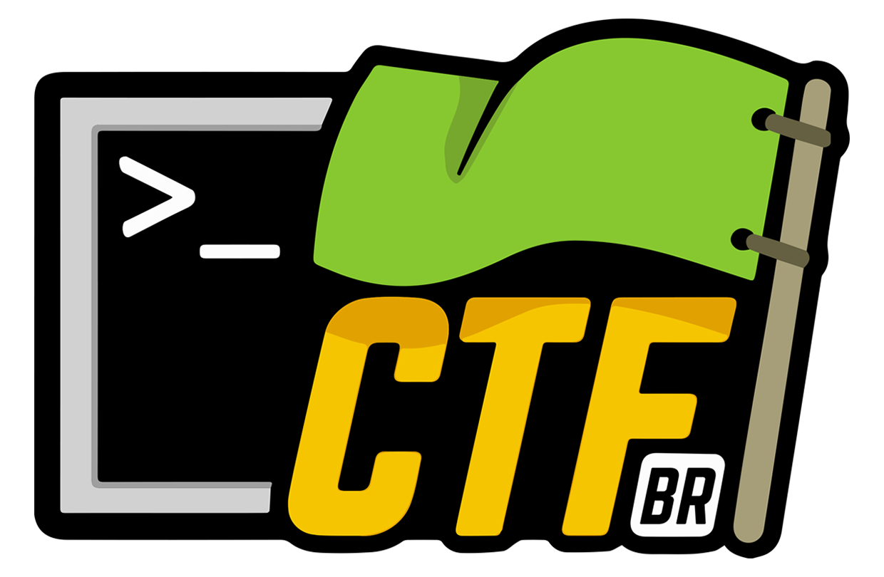

CTF-BR
Ruy Barbosa — Salvador/BA — Novembro/2015
http://ctf-br.org
“whoami”
Fernando Pinheiro | #raulhc | Security Analyst at UFBA
O que é?
Um Projeto feito pela comunidade para a comunidade, com o intuito de disseminar a cultura dos CTFs pelo Brasil.
Quem faz?
Voluntários de diversos times brasileiros. Você também pode participar e contribuir!
Principais Objetivos
Mostrar que esse tipo de competição é extremamente útil para a formação intelectual e profissional dos participantes, pois exercita o raciocínio lógico, trabalho em equipe, e capacita os players a pensar “fora da caixa” na resolução de problemas diversos de infosec (segurança da informação) e lógica;
Principais Objetivos
Disseminar a cultura do maravilhoso mundo das competições Capture the Flag no Brasil, tornando-as tão populares quanto as Maratonas de Programação.Visando cumprir esse objetivo, pretendemos dar palestras, utilizar redes sociais e outros recursos para chegar ao nosso público-alvo, que são estudantes, entusiastas e profissionais de TI;
Principais Objetivos
Utilizar o CTF-BR University para levar os CTFs às Universidades e Instituições de Ensino, bem como para eventos de TI em geral, proporcionando um primeiro contato com esse mundo aos estudantes e/ou participantes;
Como contribuir?
Há diversas formas de contribuir, veja em http://ctf-br.org/contribua/
As principais são: financeiramente, com hardwares, criando challenges e levando o CTF-BR University para sua Instituição de Ensino ou Evento..
CTF-BR University
Você deseja um CTF introdutório na sua Universidade ou Evento?
Nós podemos proporcioná-lo!
Utilizando a mesma plataforma do Pwn2Win CTF, e com 12 challenges (6 iniciantes e 6 avançados), podemos organizar um CTF na sua Instituição e estimular os alunos a trabalhar em equipe e pensar “fora da caixa”!
Beleza, e o que é esse CTF?
Capture the Flag é um tipo de competição que envolve diversas competências das equipes formadas por profissionais, estudantes ou entusiastas, para a realização de desafios relacionados à infosec (Segurança da Informação) e lógica.
Continua...
Têm duração normalmente de 24 ou 48 consecutivas (sem intervalo), sendo que algumas possuem as qualificatórias online e as finais on-site (offline).
A estratégia de “logística” da equipe conta muito para se dar bem!
O que são as flags?
As flags nessas competições são um código que as equipes obtêm ao realizar os desafios. Com esse código em mãos, a equipe submete no sistema online e obtêm os pontos referentes àquele desafio em específico.
Exemplos de flag
As competições têm tentado padronizar as flags nos últimos anos, colocando o nome do evento antes (EVENTO{flag}). Em suma, o formato varia de competição pra competição, e as vezes dentro da própria competição.
Exemplos
HITCON CTF 2014:
HITCON{a755be06b165ed8fc4710d3544fce942}
HITCON{SO0O0OO_MaNy_7Ar_Le\/eLs}
Mais alguns exemplos
2º e 3º Hacking n' Roll (BR)
55 DEFACEDDECADE BoltCanDoIt FfIiBbOoNnAaCcCcIi
Formatos CTF
1º Jeopardy-Style 2º Attack / Defese 3º Híbridos
Jeopardy-style
Estilo Quiz, possuem challenges de diversas categorias, níveis de dificuldade e pontuações. Tanto as categorias, como o formato de pontuação variam de evento pra evento.
Categorias
Forensics (Forense)
Reversing (Eng. Reversa)
Pwnable/Exploitation (Exploração de binários)
Networking (Redes)
Miscellaneous (Diversos)
Trivia (Triviais)
Crypto (Criptografia)
Web Hacking.


Attack/Defense
De forma genérica, as equipes recebem uma VM com diversos serviços (alguns vulneráveis), e o objetivo é capturar as bandeiras alheias e proteger as do seu time com patchs.
Write-ups
São tutoriais que apresentam a resolução de um desafio por alguma equipe após a competição.
Hints
São dicas dadas para os challenges durante a competição. Algumas dicas, dependendo do desafio, já saem desde quando o mesmo é lançado, e outras são dadas durante o decorrer, conforme a dificuldade apresentada pelas equipes.
Site referência no meio, onde os organizadores de CTFs, que normalmente são as próprias equipes, cadastram seus eventos. O capitão de cada time pode registrar o mesmo lá, e os membros, através de um hash, ingressam nele no site. O CTFTime.org mantém um ranking anual das melhores equipes, e também armazena write-ups.

Principais Competições
Brasileiras:
Hacking n' Roll (Organizado pelo INSERT) Pwn2Win CTF (Organizado pelo ELT)
Principais Competições
Gringas:
DEF CON Quals e Finals Codegate Quals e Finals HITCON CTF CSAW CTF picoCTF e PlaidCTF (by PPP)
Como aprender?
Participe de CTFs,
principalmente os brasileiros!!!
Verifique os documentos
(palestras, artigos, links...)
disponíveis em http://ctf-br.org/docs, pois
há muito conteúdo interessante e introdutório.
Como aprender?
Shelter Labs – www.shellterlabs.com
Plataforma online desenvolvida pelo INSERT para estudar com desafios de CTFs nacionais e internacionais:
Conclusão
CTFs são divertidos
CTFs exigem trabalho em equipe
(a não ser que você seja o tomcr00se)
Conclusão
CTFs fazem você crescer em diversas áreas do conhecimento, e aprender a resolver desafios rapidamente em equipe;
CTFs deixam você preparado e motivado para desafios da vida real!
CTFs podem ser lucrativos, pois a maioria possuem premiações ($$)!!!
Mais informações:
ctf-br.org
Irc : #ctf-br